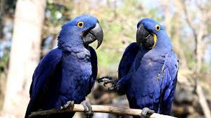

El guacamayo de Spix
 El guacamayo de Spix (Cyanopsitta spixii), una especie endémica de Brasil, fue declarado extinto en su hábitat natural en 2000, aunque existen ejemplares en cautiverio y se han realizado esfuerzos de reproducción y reintroducción.
Amenazas
La especie se enfrenta a amenazas como la pérdida de hábitat y el cambio climático.